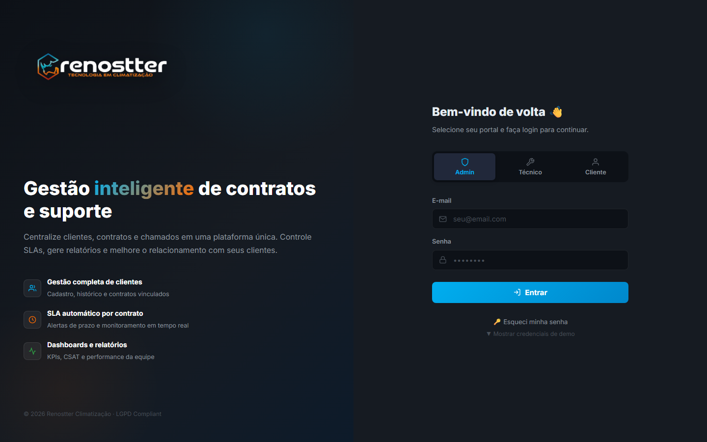

1Visão geral
O módulo de Estoque gerencia o catálogo de peças e equipamentos HVAC. Cada item tem SKU, categoria, preço de custo, preço de venda, quantidade atual, localização e fornecedor. O sistema dispara alertas de baixo estoque e alimenta o BOM das cotações.
Por que existe
Antes deste módulo, controle de peças era em planilha + olhômetro do técnico. Problemas:
- Técnico ia ao local sem saber se tinha peça → tinha que voltar e remarcar visita
- Estoque crítico (zero ou baixo) só era percebido quando faltava
- Compra de peças sem histórico de consumo → sobrava de um item, faltava de outro
- BOM de cotação era inventado (não puxava do estoque real)
O módulo resolve com: catálogo único, alertas de reordenamento, integração com módulo de Cotação (BOM automático), e importação em massa para cadastro inicial.
Quem usa
- Almoxarife / Estoquista — cadastra itens, controla entrada/saída
- Técnico de campo — consulta disponibilidade de peças antes de ir ao local
- Comprador — recebe alertas de reordenamento
- Gerente — KPIs de valor em estoque, margem média, baixo estoque
2Conceitos-chave
2.1 Tipos de item
| Tipo | Categoria | Exemplos | Aparece no BOM? |
|---|---|---|---|
| Equipamento | equipamento | Split, VRF, Chiller, Self-contained | Sim (1 unidade por cotação) |
| Material de instalação | tubulacao, cabo, suporte, dreno, isolamento, fixacao | Tubo de cobre, cabo PP, suporte | Sim (qty variável) |
| Refrigerante | refrigerante | Gás R-410A 2kg / 5kg | Sim (carga) |
| Elétrica | eletrica | Disjuntor, contactor | Sim |
| Conexão | conexao | Porcas, anilhas, curvas | Sim (kit x2) |
2.2 Campos principais de um item
| Campo | Obrigatório | Descrição |
|---|---|---|
sku | sim | Código único do item (ex: AC-LG-30K, TB-CU-5-8) |
nome | sim | Descrição legível (ex: "Split Hi-Wall LG Dual Inverter 30.000 BTU") |
categoria | sim | Classificação (equipamento, tubulacao, cabo, etc.) |
subcategoria | não | Sub-classificação (split, VRF, cobre, PP, etc.) |
marca / modelo | não (obrig. p/ equipamento) | Para equipamentos |
potencia_btu | não (obrig. p/ equipamento) | Capacidade em BTU/h |
refrigerante | não | R-410A, R-32, etc. |
preco_custo | sim | Quanto você paga (compra) |
preco_venda | sim | Quanto você cobra (BOM da cotação) |
estoque_atual | sim | Quantidade em mãos |
estoque_minimo | não | Trigger do alerta de baixo estoque (padrão: 5) |
localizacao | não | Depósito A1, Prateleira 3, etc. |
fornecedor | não | Nome do distribuidor |
ativo | sim | 1 = visível, 0 = arquivado |
3Acesso rápido
- Sidebar → menu Operacional → Estoque
- URL direta:
http://localhost:3000/crm/admin/inventory.html - PWA técnico tem uma versão simplificada para consulta em campo

4Lista de itens
A lista é o centro operacional. Mostra todos os SKUs ativos com colunas ordenáveis (clique no header):
- SKU — código único
- Nome — descrição
- Categoria — classificado por cor
- Marca/Modelo — quando aplicável
- BTU — apenas equipamentos
- Qtd — estoque atual (com cor: verde > 10, amarelo 5-10, vermelho < 5)
- Custo / Venda — preço compra / venda
- Margem — % calculado
- Localização — Depósito X
Indicadores visuais de estoque
| Cor | Quando | Ação |
|---|---|---|
| Verde | Estoque > 10 unidades | Nenhuma, ok |
| Amarelo | Estoque entre 5 e 10 | Considerar reordenamento |
| Vermelho | Estoque < 5 (ou abaixo do mínimo) | Comprar URGENTE |
5Cadastrar um item
- Clique + Novo Item
- Preencha o SKU (siga padrão da sua empresa, ex:
CATEGORIA-MARCA-POTENCIA) - Escolha a categoria (define comportamento no BOM)
- Preencha nome descritivo
- Para equipamentos: marca, modelo, BTU, refrigerante
- Preencha preço custo e preço venda (margem calculada automaticamente)
- Defina estoque atual e mínimo (alerta)
- Indique localização (Depósito X, Prateleira Y)
- Salve
Use um padrão consistente, ex: AC-LG-30K (categoria-marca-potência), TB-CU-5-8 (categoria-material-bitola). Facilita busca, importação e identificação rápida.
6Movimentação de estoque
Toda saída de peça (uso em campo) ou entrada (compra recebida) é registrada no sistema para manter o estoque_atual correto.
Tipos de movimentação
| Tipo | Quando | Estoque |
|---|---|---|
| Entrada | Recebimento de compra, devolução de cliente | + |
| Saída | Uso em campo, venda avulsa | - |
| Ajuste | Inventário, correção de erro | +/- |
| Transferência | Mover entre depósitos | 0 (apenas localização) |
Como registrar
- Na lista, clique no item
- Abra a aba Movimentações
- Clique + Nova Movimentação
- Selecione o tipo (entrada/saída/ajuste)
- Informe a quantidade e o motivo (ex: "Usado na OS #00012")
- Salve — o
estoque_atualé recalculado automaticamente
Quando o técnico finaliza um chamado e marca as peças usadas, o sistema debita automaticamente do estoque (integração com módulo Chamados). Você não precisa lançar saída manual nesse caso.
7Alertas de baixo estoque
Quando o estoque_atual cai abaixo do estoque_minimo (padrão 5), o item:
- Fica com badge vermelho na lista
- Aparece no card "Estoque Crítico" da dashboard do comprador
- Dispara notificação por e-mail (se configurado)
- É contado no KPI "Baixo Estoque" do BI
Política recomendada de mínimo
| Categoria | Mínimo recomendado | Por quê |
|---|---|---|
| Equipamentos | 2-3 unidades | Alta margem, baixa rotatividade (cada venda é R$ mil) |
| Tubos / Cabos | 15-20 unidades | Alta rotatividade, baixo custo, ocupa espaço |
| Disjuntores / Conexões | 20-30 unidades | Consumo recorrente, deve ter sempre |
| Gás refrigerante | 5-8 unidades | Essencial, prazo de compra longo |
8Categorias
As categorias definem como o item aparece no BOM de cotação. O sistema vem com 7 categorias padrão (equipamento, tubulacao, cabo, suporte, dreno, isolamento, fixacao, refrigerante, eletrica, conexao). Você pode adicionar customizadas.
Como criar uma categoria
- No menu lateral, clique Categorias
- Preencha o nome (ex: "Filtro de Ar")
- Escolha uma cor para identificação visual
- Defina se entra no BOM automático (recomendado)
- Salve
9Importação em massa
Para popular o estoque inicial (centenas de SKUs), use o importador CSV.
Formato do CSV
sku,nome,categoria,marca,modelo,potencia_btu,preco_custo,preco_venda,estoque_atual,localizacao
AC-LG-09K,"Split LG 9.000 BTU",equipamento,LG,Dual Inverter,9000,1400,2199,12,Depósito A1
TB-CU-1-4,"Tubo Cobre 1/4 15m",tubulacao,,,,,180,320,50,Depósito D1
DS-30A,"Disjuntor 30A Mono",eletrica,,,,,35,70,50,Depósito F1Como importar
- No menu, clique Importar CSV
- Selecione o arquivo
- Escolha se quer somar ao estoque existente ou substituir
- Clique Importar
- Veja o relatório: quantos importados, quantos erros, quantos atualizados
Para criar 24 itens de exemplo (8 equipamentos + 16 materiais HVAC), rode:
node seed-inventory.cjsEsse script é idempotente (pode rodar várias vezes sem duplicar).
10Precificação & margem
Cada item tem preco_custo (quanto você paga) e preco_venda (quanto vai no BOM da cotação). A margem é calculada automaticamente.
Margem (%) = ((preco_venda - preco_custo) / preco_custo) × 100Benchmarks de margem por tipo
| Tipo | Margem saudável | Motivo |
|---|---|---|
| Equipamento | 30-50% | Alto valor agregado, marca, garantia |
| Tubos / Cabos | 60-80% | Commodity, fácil comparação, markup alto cobre logística |
| Refrigerante | 50-70% | Essencial, sem substituto |
| Acessórios | 100-200% | Conexões, abraçadeiras, etc. |
11Boas práticas
✅ Faça
- Mantenha estoque mínimo realista — analise consumo histórico dos últimos 6 meses
- Padronize SKUs — facilita busca e importação
- Faça inventário trimestral — compare físico × sistema, ajuste as diferenças
- Use localizações claras — "Depósito A1 / Prateleira 3 / Caixa 12"
- Revise margem por categoria a cada 6 meses (custo muda!)
❌ Evite
- Não ignore alertas de baixo estoque — perder venda por falta de peça = prejuízo garantido
- Não cadastre item com mesmo SKU duas vezes — sistema soma no estoque, mas pode confundir
- Não delete itens com histórico — marque como
ativo = 0(arquivado)
12API reference
GET /api/inventory
Lista itens do estoque com filtros: categoria, ativo, search, low_stock (true = só baixo estoque).
GET /api/inventory?ativo=1&categoria=equipamento
GET /api/inventory?low_stock=trueGET /api/inventory/:id
Detalhe de um item + histórico de movimentações.
POST /api/inventory
Cria novo item.
POST /api/inventory
{
"sku": "AC-SAM-18K",
"nome": "Samsung Wind-Free 18.000 BTU",
"categoria": "equipamento",
"marca": "Samsung",
"modelo": "Wind-Free",
"potencia_btu": 18000,
"refrigerante": "R-410A",
"preco_custo": 2700,
"preco_venda": 4299,
"estoque_atual": 6,
"localizacao": "Depósito A2"
}PUT /api/inventory/:id
Atualiza dados do item.
POST /api/inventory/:id/movimentar
Registra movimentação (entrada/saída/ajuste).
POST /api/inventory/:id/movimentar
{
"tipo": "saida",
"quantidade": 1,
"motivo": "OS #00012"
}POST /api/inventory/importar
Importa lista de itens em massa (CSV ou JSON).
POST /api/inventory/importar
{
"modo": "somar",
"itens": [
{"sku": "AC-LG-09K", "quantidade": 5},
{"sku": "DS-30A", "quantidade": 30}
]
}GET /api/inventory/stats
KPIs agregados (alimenta o BI): totalItens, valorCusto, valorVenda, baixoEstoque, totalEquipamentos, valorEquipamentos.
• README geral · Cotação (consome estoque via BOM)
• Chamados (saída automática ao fechar OS)